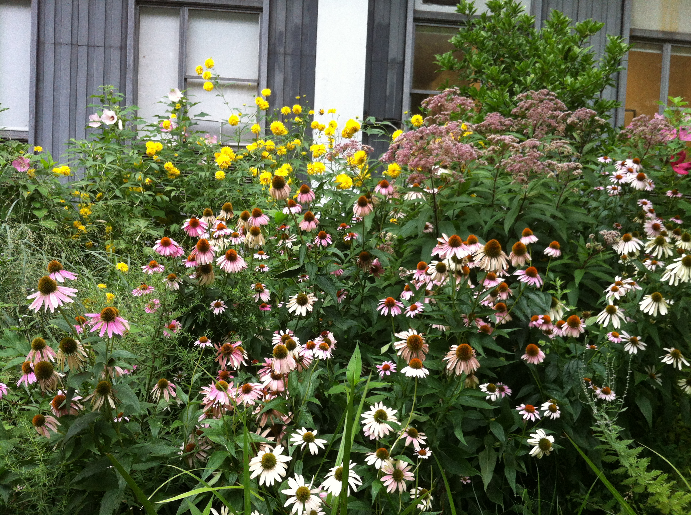

Tulips
By Sylvia Plath

The tulips are too excitable, it is winter here.
Look how white everything is, how quiet, how snowed-in.
I am learning peacefulness, lying by myself quietly
As the light lies on these white walls, this bed, these hands.
I am nobody; I have nothing to do with explosions.
I have given my name and my day-clothes up to the nurses
And my history to the anesthetist and my body to surgeons.
They have propped my head between the pillow and the sheet-cuff
Like an eye between two white lids that will not shut.
Stupid pupil, it has to take everything in.
The nurses pass and pass, they are no trouble,
They pass the way gulls pass inland in their white caps,
Doing things with their hands, one just the same as another,
So it is impossible to tell how many there are.